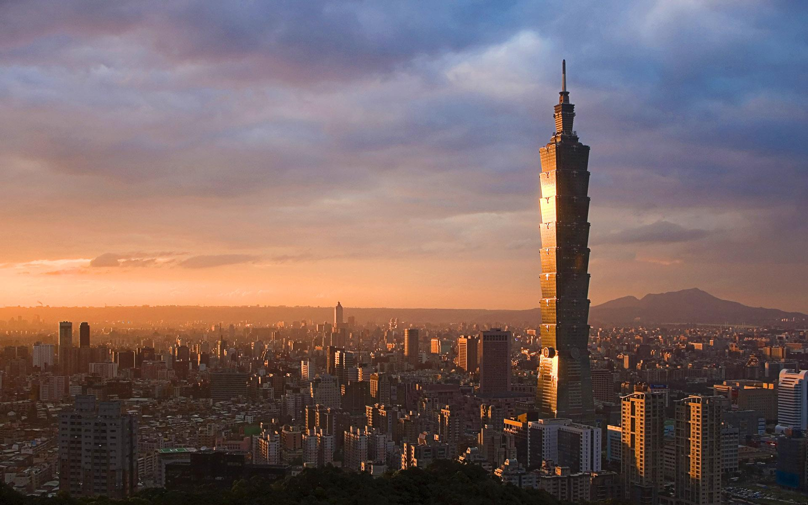

Locate Your Destination
CONTINENT
Asia
Republic of Maldives
Maldives
China
Hong Kong
Taiwan
Europe
France
Paris
Italy
Venice
Finland
Helsinki
Greece
Greece
Spain
Barcelona
UK
London
Hungary
Prague
Australia
Sydney
North America
Cuba
Cuba
Canada
Vancouver
Maui
Maui
|
Taiwan
Country: China
Rank:5
Tag:Food, Nature, Life, Adventure, Tradition

With its all-around adventure landscape, heritage-rich capital, diverse folk
traditions and feted night market scene, Taiwan offers a continent-sized travel
list for one green island.
People who have been to Maldives:
-
By Robert Kelly, Writer:
I have been living in Taiwan for the past 17 years and when I wake up in the
morning I still wonder how I can possibly find time for all the new passions
I've developed here: go cycle or hike in the lush mountains in my Taipei
neighbourhood? Visit a traditional temple and study historical allusions in yet
another sculptured masterpiece? Try a new strain of organic tea or single-origin
coffee? Improve my Mandarin? Or just catch the latest mass rally downtown of
locals trying to make this a better place? I love that Taiwan gives me the
freedom to go anywhere, do anything, and that no matter what I delve into, I'm
always rewarded for going deeper.
reviewID:r5
Highlights:
-
Asian Values On Their Terms
Defying those who said it wasn't in their DNA, the Taiwanese have created Asia's
most vibrant democracy, and liberal society, with a raucous free press, gender
equality and respect for human rights and increasingly animal rights as well.
The ancestors are still worshipped, and mum and dad still get their dues, but
woe befall the politician who thinks it's the people who must pander, and not
him. If you want to catch a glimpse of the people's passion for protest, check
out Taipei Main Station on most weekends, or just follow the local news.
Things To Do:
- Miaokou Night Market
address:Keelung TaiwanopenHours:hours vary
People who like this place also like to go to:
Hong Kong
source:
Lonely Planet:
www.lonelyplanet.com/greece
|